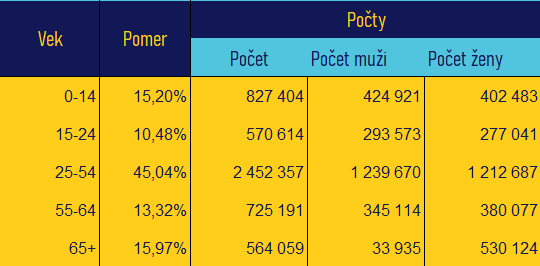
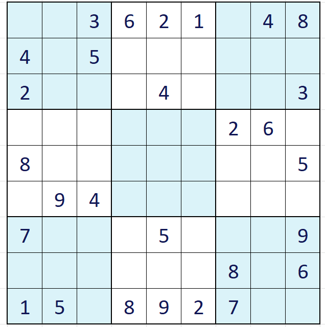
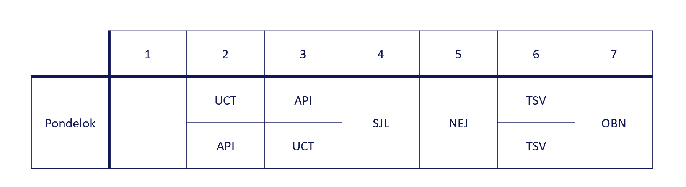
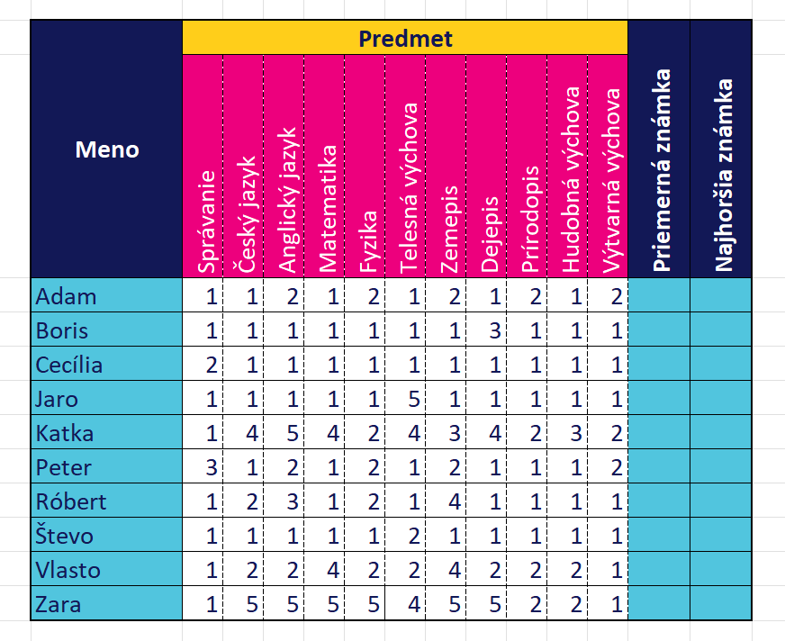
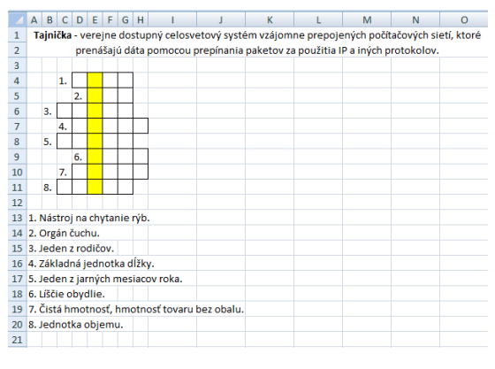

Pracovný zošit H02
Päť hárkov s dátami a predlohami: obyvateľstvo, sudoku, rozvrh, známky a tajnička.
Stiahnuť XLSXUprav rozmery buniek, zarovnanie a orámovanie. Vytvor spoločné hlavičky a precvič si formátovanie na piatich hárkoch.
V druhej hodine upravíš šírku stĺpcov, výšku riadkov, zarovnanie, výplne a orámovanie. Zlúčené bunky použiješ pri spoločných nadpisoch. Hodnoty v tabuľkách pritom zostávajú zachované.
| Pomôcka | Počet | Cena za kus |
|---|---|---|
| Zošit | 12 | 1,50 € |
| Pero | 8 | 0,80 € |
| Pravítko | 3 | 1,20 € |
Zvýraznená hlavička, odsadenie a jednotný formát čísel zlepšujú čitateľnosť. Hodnoty zostali rovnaké.
| Úprava | Kde ju nájdeš | Na čo si dať pozor |
|---|---|---|
| Šírka stĺpca a výška riadka | Domov → Bunky → Formátovať | Dvojklik na hranicu stĺpca automaticky prispôsobí šírku. |
| Zarovnanie a zalomenie | Domov → Zarovnanie | Zalomený text môže vyžadovať vyšší riadok. |
| Zlúčenie buniek | Domov → Zarovnanie → Zlúčiť a centrovať | Zostane iba obsah ľavej hornej bunky. |
| Orámovanie | Domov → Písmo → Orámovanie | Mriežka hárka nie je skutočné orámovanie. |
| Percentá a oddelenie tisícov | Domov → Číslo | Formát mení zobrazenie, nie uloženú hodnotu. |
Hodnota 0,152 sa po nastavení percent zobrazí ako 15,20 %. Neprepisuj ju na 15,2 a súčasne nenastavuj percentá, pretože by sa zobrazilo 1520 %.
Najprv spolu upravíte tabuľku obyvateľstva. Potom použiješ rovnaké nástroje pri sudoku, rozvrhu, tabuľke známok a vlastnej tajničke.
Otvoriť postup cvičeniaPracuješ s piatimi hárkami v zošite H02.
Priezvisko_Formatovanie.xlsx.Pôvodná tabuľka je v C12:G17. Najprv vytvoríš miesto pre spoločnú hlavičku.
C14:G18.C12 napíš Vek a do D12 Pomer. Duplicitné texty v C13 a D13 vymaž klávesom Delete.C12:C13 a použi Domov → Zarovnanie → Zlúčiť a centrovať. Rovnakým spôsobom zlúč D12:D13.E12 napíš Počty. Označ E12:G12 a zlúč do jednej hlavičky. Pod ňou v E13:G13 zostanú názvy Počet, Počet muži a Počet ženy.Excel ponechá obsah ľavej hornej bunky. Preto nezlučuj číselné údaje v tabuľke a hlavičku priprav podľa uvedeného postupu.
Formát má pomôcť čítať rovnaké pôvodné údaje.
C:G. Použi Domov → Bunky → Formátovať → Automaticky prispôsobiť šírku stĺpca, prípadne dvojklikni na hranicu medzi písmenami stĺpcov.D14:D18 zobraz ako percentá s dvoma desatinnými miestami. Hodnotu 0,152 tak uvidíš ako 15,20 %. Počty v E14:G18 nastav ako čísla bez desatinných miest s oddeľovačom tisícov.C12:G18 nastav všetky orámovania. Hlavičke daj tmavomodrú výplň a svetlé alebo žlté písmo, podhlavičke E13:G13 svetlomodrú výplň a dátam C14:G18 žltú výplň podľa predlohy.
Existujúce čísla sú v J3:R11. Úlohou hodiny je upraviť mriežku.
J3:R11. Stĺpcom J:R nastav rovnakú šírku a riadkom 3:11 rovnakú výšku. Orientačne môžeš použiť šírku 4,5 a výšku 30 bodov; výsledkom majú byť približne štvorcové políčka.J3:L5, M3:O5, P3:R5; rovnako bloky v riadkoch 6 až 8 a 9 až 11.
Navrhnuté umiestnenie: nový hárok Rozvrh, rozsah B2:I4.
Text na Hárku 3 odkazuje na „hárok 1“, ktorý už obsahuje tabuľku obyvateľstva. Aby si ju neprepísal/a, pridaj nový hárok Rozvrh, prípadne použi voľnú plochu Hárka 3 podľa pokynu učiteľa.
C2:I2 zapíš čísla hodín 1 až 7.B3 napíš Pondelok a zlúč B3:B4. Pre jednotlivé hodiny ponechaj dva riadky, aby si vedel/a zobraziť delené vyučovanie.D3 zapísať UCT, D4 API, E3 API a E4 UCT. F3:F4 zlúč pre SJL, G3:G4 pre NEJ a I3:I4 pre OBN. V stĺpci H je TSV v oboch riadkoch.
Údaje sú v B6:O17. Počítanie známok nie je cieľom tejto hodiny.
B6:B7 pre hlavičku Meno, C6:M6 pre hlavičku Predmet, N6:N7 pre Priemerná známka a O6:O7 pre Najhoršia známka.C7:M7 a nastav Domov → Zarovnanie → Orientácia, napríklad otočenie textu o 90°. Zvýš výšku riadka 7 a zúž stĺpce C až M tak, aby názvy zostali celé viditeľné.B6:O17 nastav orámovanie. Mená B8:B17 a prázdne výsledkové stĺpce N8:O17 zvýrazni svetlomodrou výplňou.
Využi orámovanie a rozmery buniek vo vlastnom návrhu.
J21. Obrázok je nižšie pri stĺpci J.B3:H15, aby si nezakryl/a inšpiráciu.
Odškrtnutie sa ukladá iba v tomto prehliadači. Neupravuje pracovný zošit ani neposiela údaje na server.
Stiahni pracovný zošit a pracuj vo vlastnej kópii. Súbory sú pôvodné dodané podklady; príklady na tejto stránke ich nemenia.
Päť hárkov s dátami a predlohami: obyvateľstvo, sudoku, rozvrh, známky a tajnička.
Stiahnuť XLSXVýška riadkov, šírka stĺpcov, zlúčenie buniek, orámovanie a zadanie práce.
Stiahnuť PPTX